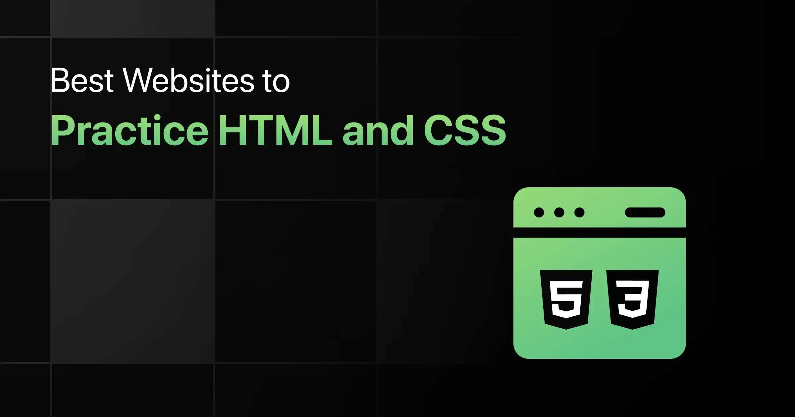
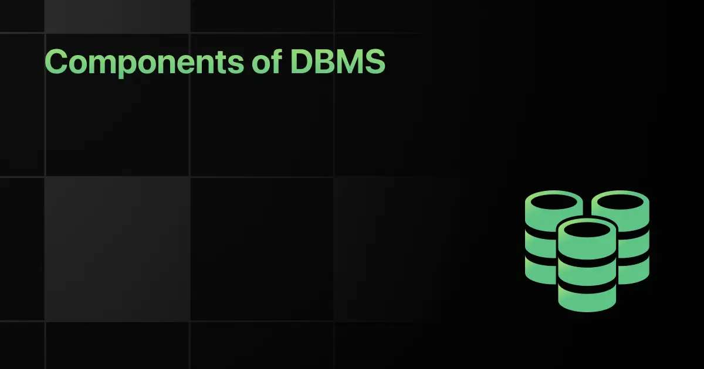
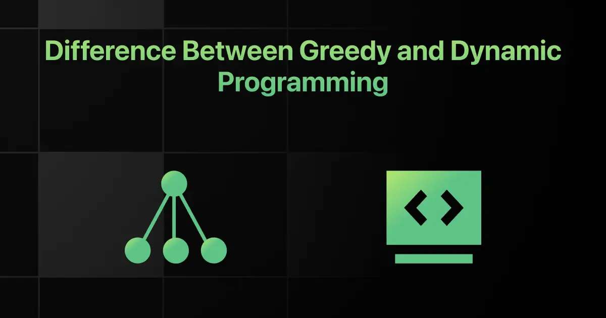

12 june, 2026 (Last Updated)

Many people start learning HTML and CSS by watching tutorials or reading articles, but struggle when it's time to build actual web pages on their own. Without hands-on practice, it's easy to forget what you've learned or feel unsure about how to apply it. Beginners often don't know where to start or which platform can guide them clearly.
Popular options like Placement Preparations, GUVI WebKata, freeCodeCamp, and Fronted Mentor offer different ways to practice through real projects, live editors, and step-by-step exercises. This blog will guide you to websites that make it easier to learn and practice HTML and CSS in a simple, beginner-friendly way.
If you're just starting out with HTML and CSS, choosing where to practice can feel a bit confusing. There are many platforms available, but not all of them provide clear guidance or beginner-friendly exercises.
Some websites focus more on advanced projects, while others may not offer live previews or useful feedback. To help you start with confidence, we've put together a list of websites that offer structured HTML and CSS practice, helpful hints, and hands-on challenges for beginners.
Here's an overview of the top 10 websites to practice HTML and CSS:
| S.No | Website Name | Difficult Level | Pricing | Website Link |
|---|---|---|---|---|
| 1 | Placement preparation | Beginner to Advanced | Freemium | View Now |
| 2 | GUVI - WebKata | Beginner to Advanced | Free | View Now |
| 3 | Frontend Mentor | Beginner to Advanced | Free + Paid | View Now |
| 4 | CodePen Challenges | Intermediate | Free | View Now |
| 5 | freeCodeCamp | Beginner to Intermediate | Free | View Now |
| 6 | CSSBattle | Intermediate | Free | View Now |
| 7 | The Odin Project | Beginner | Free | View Now |
| 8 | DevChallenges.io | Beginner to intermediate | Free | View Now |
| 9 | Flexbox Froggy | Beginner | Free | View Now |
| 10 | W3Schools | Beginner | Free | View Now |

Below is the list of 13 best websites to practice HTML & CSS for beginners:
Placement preparation is a live coding practice platform designed to help beginners learn HTML and CSS through hands-on exercises. It offers a clean, browser-based editor where users can write code and receive instant feedback as they work, helping them correct mistakes in real-time.
The exercises are organized into three levels; beginners, intermediate, and advanced-and cover core topics like layout, styling, responsive design,and common interview patterns.
The system reuses questions frequently asked in tech interview rounds, so learners build both foundational skills and job-ready knowledge.
Practice Format:Live coding challenges
Learning Path:Arranged by skill level and interview relevance
Difficult Level:Beginner to Advanced
Progress Tracking:Hints, feedback, and scoringFreemium
Pricing:Freemium (core content is free)
GUVI's WebKata platform offers structured HTML and CSS challenges based on real-world tasks, such as building layouts and styling forms. It provides steb-by-step problem sets that help learners gradually enhance their front-end skillswith immediate evaluation and progress markers.
Each challenge is rewarded with "Geekoins" upon completion, creating a gamified experience without distractions. The platform supports progression from basic syntax and element usage to intermediate-level layouts and respo sive design techniques.
Practice Format:Real-world coding projects
Learning Path:Difficulty-based challenge sets
Difficult Level:Beginner to Advanced
Progress Tracking:Manual, through subsmissions and feedback
Pricing:Free with optional paid challenges
CodePen Challenges offer weekly HTML and CSS prompts on creaive themes like typography, bubbles, or layouts. These prompts encourage users to experiment with visuals, layout, and interactivity.
The platform promotes creativity and exploration, making it well-suited for learners who enjoy hands-on design practice. Submissions are visible to the public, allowing for inspiration, feedback, and community interaction.
Practice Format:Weekly open-ended prompts
Learning Path:Thematic creative challenges
Difficult Level:Intermediate
Progress Tracking:Community engagement and self-review
Pricing:Free
freeCodeCamp's Responsive Web design certification teaches leaeners how to build websites using HTML and CSS from scratch. It includes over 300 interactive exercises and projects such as menus, product pages, and landing pages.
Each lesson introduces a single concept, followed by practical exercisesand mini-projects. Learners progress through structured sections covering layout, flexbox, grid, and accessibility.
Practice Format:Interactive coding lessons and projects
Learning Path:Sequential certification structure
Difficult Level:Beginner to Intermediate
Progress Tracking:Auto-validated exercises and project completion
Pricing:Free
CSSBattle is a coding game where learners recreate visual targets using the shortest possible CSS code. It introduces a fun, competitive way to practice CSS layout, shapes, and positioning.
Players earn points by matching their output to the target image, which improves visual problem-solving and code optimization. The platform is ideal for quick, repeatable CSS practice.
Practice Format:Visual CSS challenge battles
Learning Path:Challenge-based leaderboard format
Difficult Level:Intermediate
Progress Tracking:Leaderboards and scoring per battle
Pricing:Free
The Odin Project Foundations course includes HTML and CSS modules as part of a larger full-stack curriculum. It blends written tutorials with project-based learning and is designed for serious beginners.
Learners build websites like recipe pages, landing pages, and full layouts while als learning version control with Git. The structured roadmap makes it a reliable guide for starting a development journey.
Practice Format:Written tutorials and hands-on projects
Learning Path:Module-based curriculum
Difficult Level:Beginner
Progress Tracking:Manual via GitHub and course progress indicators
Pricing:Free
DevChallenges.io lets learners practice HTML and CSS by building real applications from design specs. Each challenge is paired with a brief and expected functionality, mirroring real workplace tasks.
Users can join learning tracks such as Responsive Web Developer and share completed projects for feedback. The peer review system supports improvement through collaboration.
Practice Format:Design-to-code project challenges
Learning Path:Role-based challenge tracks
Difficult Level:Beginner to Intermediate
Progress Tracking:Project submissions and community reviews
Pricing:Free
Flexbox Froggy is a visual game that teaches how to use CSS Flexbox properties. Players guide a frog across the screen by entering the correct CSS code for layout alignment.
With 24 levels, each focusing on one or two new properties, the game builds concept clarity through repetition. It is especially useful for mastering layout bahavior in a playful format.
Practice Format:Interactive Flexbox game
Learning Path:Level-based progression
Difficult Level:Beginner
Progress Tracking:In-game level progression
Pricing:Free
W3Schools offers an HTML tutorial with embedded editors where learners can write, test, and preview code instantly. It includes short lessons followed by practice exercises to reinforce learning.
The tutorial spans basic to advanced HTML topics with over 200 code examples. It's simplicity and built-in editor makes it a reliable starting point for absolute beginners.
Practice Format:Interactive examples and exercises
Learning Path:Chapter-based tutorial
Difficult Level:Beginner
Progress Tracking:Manual progression through lessons
Pricing:Free
With so many beginner-friendly platforms available, learning HTML and CSS has never been more accessible. Websites like Placement Preparations, GUVI WebKata, freeCodeCamp, and Frontend Mentor offer hands-on coding practice, live previews, and step-by-step challenges to help you build real front-end skills.
Whether you are just starting or preparing for web development interviews, these tools give you a practical way to learn by doing. We will keep updating this article as more platforms become popular amongstudents and placement aspirants.
Several websites are available to practice HTML and CSS, including Placement Preparation, GUVI WebKata, freeCodeCamp, Frontend Mentor, and CodePen Challenges.
Website give you a hands-on way to write real code, see the results instantly, and fix mistakes as you learn. This helps you understand how web pages are built and styled practically.
Choose a platform based on your current level, whether it includes live previews, step-by-step lessons, or project-based challenges. Community support and feedback can also be helpful as you improve.
Yes, most of these websites are beginner-friendly and guide you from the basics. They often start with simple exercises and gradually move into projects and layout design.
Placement Preparation is a great choice with it's live code editor, structured learning levels, and common interview-based questions. GUVI WebKata is also helpful for topic-wise challenges and real-time feedback.
Yes, Placement Preparation offers live coding practice, real-time hints, and questions often asked in interviews. It helps you start from the basics and build strong front-end skills step by step.


When solving optimization problems, programmers often face situations where multiple choices are available at every step.
Choosing the right approach …
Large CSS files often become difficult to maintain as projects grow because styles get repeated, updates become slower, and managing …

How does a database store, organize, secure, and retrieve data efficiently while handling thousands of requests? This becomes possible because …